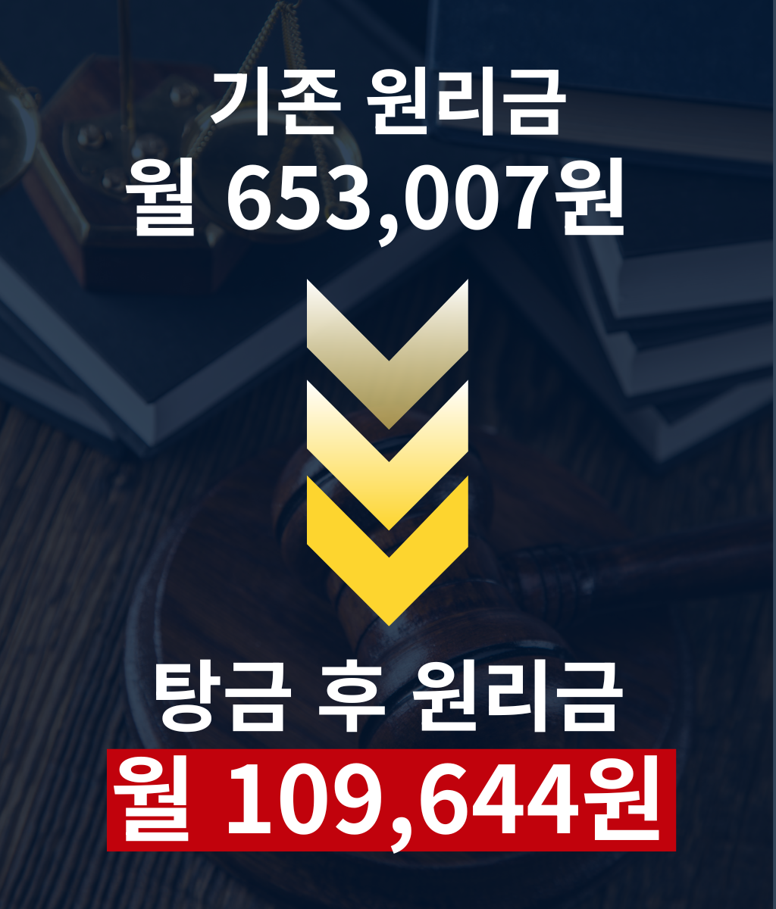
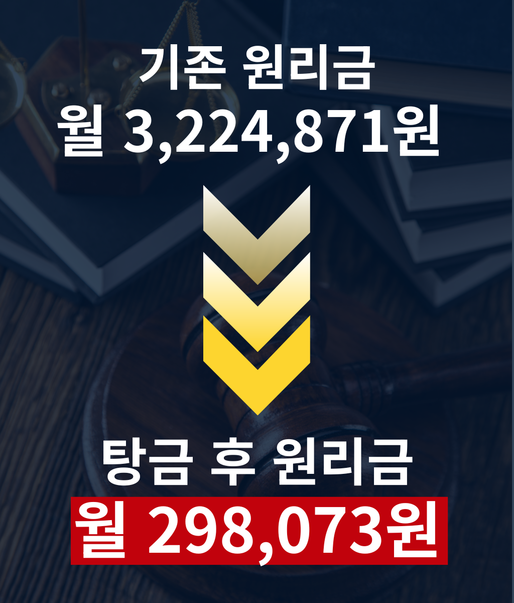
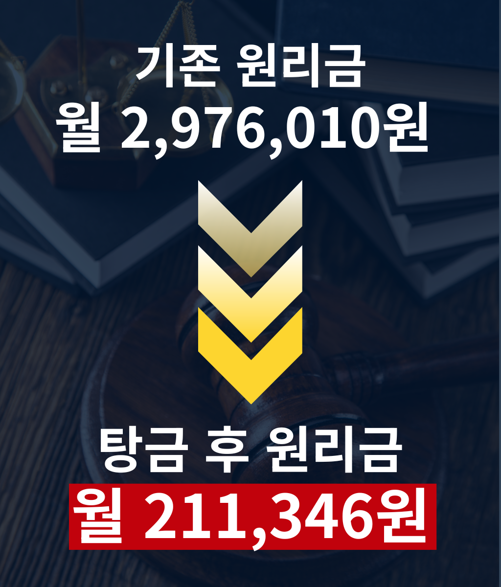
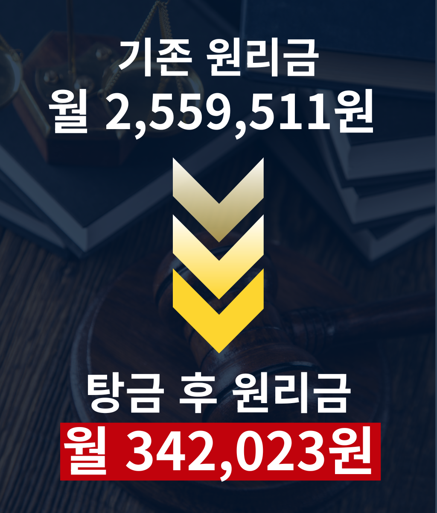
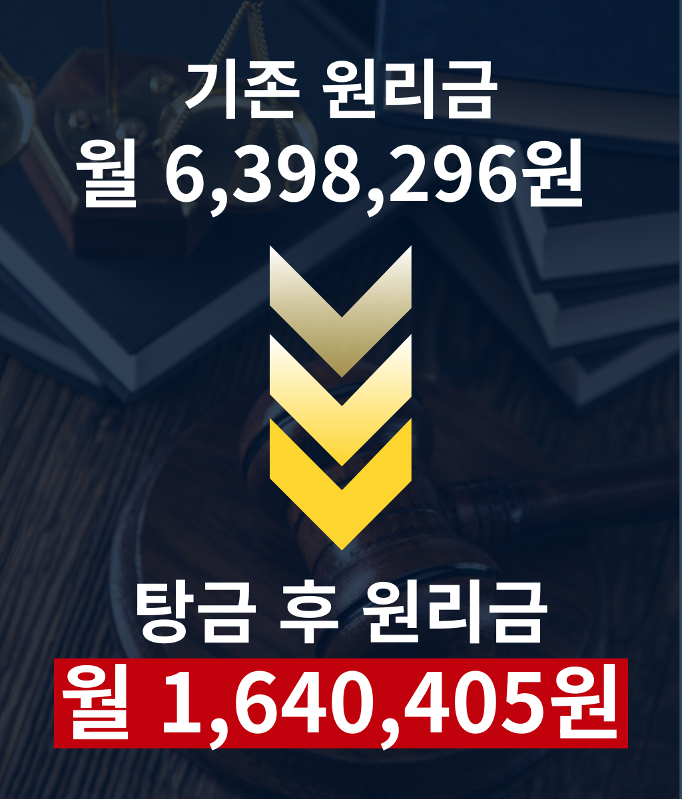
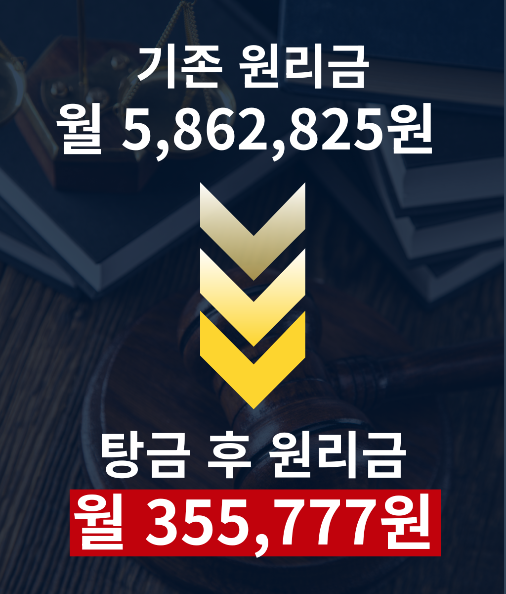

홍길동님!
상담에 들어가기 전에
잠깐, 1분만 시간을 내어
{홍길동}님과 같은 (채무원인) 사유로 빚을 졌다가
빚 독촉없는 평온한 일상으로 돌아간 3분의 리얼한 이야기를 읽어보세요.
생생한 리얼스토리
제한시간 15분만 공개!
채무탕감 길라잡이와 협약한 ABC 사무소에서
개인회생·파산 서비스를 받은 고객님의 날것의 실제 후기를 공개합니다.
비슷한 사연으로 어려움을 겪고 계신 분들 외에는 비공개 약속을 받았기에, 제한시간 15분 동안만 공개되며 이후 본 페이지는 자동 종료됩니다.
아래 후기를 읽어보시면 구체적인 개인회생·파산 진행 과정의 핵심을 알 수 있습니다.
그리고 이분들도 해냈듯, {홍길동}님 또한 겪고 계신 어려움에서 충분히 벗어나실수 있습니다.
비슷한 사연으로 어려움을 겪고 계신 분들 외에는 비공개 약속을 받았기에, 제한시간 15분 동안만 공개되며 이후 본 페이지는 자동 종료됩니다.
아래 후기를 읽어보시면 구체적인 개인회생·파산 진행 과정의 핵심을 알 수 있습니다.
그리고 이분들도 해냈듯, {홍길동}님 또한 겪고 계신 어려움에서 충분히 벗어나실수 있습니다.
법원에서 보장하는
개인회생 탕감제도
금지명령으로 독촉·협박·압류
신청 즉시 차단!
채무의 덫에서 벗어난 분들의
실제 이야기를 확인해보세요
-
직장인 신청자 김XX님 (서울)
냉동식품 공장에 다니는데, 재작년 허리디스크로 몇 달 일을 못 하면서 빚이 4천3백만원까지 늘었습니다.
통장이 막히거나 회사에 알려질까 봐 걱정하던 중 지인이 채무탕감 길라잡이를 알려줬어요. 덕분에 제 상황에 맞는 정보를 얻어 회생을 진행했고, 지금은 매달 11만원만 갚으며 딸 앞에서 웃을 수 있게 됐습니다.
한숨 대신, 이제는 웃는 얼굴을 보여줄 수 있어 다행입니다.
탕감 전탕감 후 탕감율
90.9%일용직 신청자 박XX님 (부산)막노동과 대리운전을 병행하며 애 둘을 혼자 키우다 빚이 2억을 넘겼습니다.
수임료 걱정에 망설였는데, 채무탕감 길라잡이에서 비용과 절차 정보를 솔직하게 확인할 수 있어 마음 놓고 다음 단계를 밟았어요. 지금은 한 달에 30만원만 갚으며 애들 앞에서 더 이상 한숨 쉬지 않습니다.
사람 사는 것 같은 하루하루가, 이렇게 다시 시작될 수 있더라고요.
탕감 전탕감 후 탕감율
95%프리랜서 신청자 이XX님 (대구)남편의 사고로 수입이 끊기며 빚이 1억 9천만원까지 늘었습니다.
신용불량 낙인이 평생 갈까 두려웠는데, 채무탕감 길라잡이를 통해 요즘은 1년만 성실히 갚으면 신용이 회복될 수 있다는 정보를 알게 됐어요. 지금은 매달 21만원씩 갚으며 다시 시작할 희망이 생겼습니다.
막막했던 마음에, 이제야 조금씩 볕이 듭니다.
탕감 전탕감 후 탕감율
87.1%자영업 신청자 정XX님 (경기 수원)작은 김밥집이 도로공사와 무리한 이전으로 빚이 1억 7천만원까지 늘었습니다.
재산을 다 뺏길까 겁났는데, 채무탕감 길라잡이에서 재산을 지키며 빚을 정리하는 제도라는 정보를 확인하고 용기를 냈어요. 지금은 원리금 92%를 덜고 한 달 34만원씩 갚으며 살던 집을 지키고 있습니다.
자책만 하던 제가, 이제야 조금씩 다시 일어서고 있습니다.
탕감 전탕감 후 탕감율
92%사업자 신청자 최XX님 (인천)제조업 공장이 부도나며 빚이 4억 2천만원까지 늘었고, 아버지 병간호까지 겹쳤습니다.
혼자 하려니 서류가 복잡해 엄두가 안 났는데, 채무탕감 길라잡이를 통해 필요한 정보를 정리해 전문가를 찾을 수 있었어요. 지금은 매달 54만원씩 갚으며 원금 85%를 덜었습니다.
무너졌던 자리에서, 다시 아버지 곁을 지킬 수 있게 됐습니다.탕감 전탕감 후 탕감율
85%주식·코인 신청자 한XX님 (광주)주식 투자 실패로 빚이 4억 2천만원까지 불었습니다.
신청했다가 압류가 들어올까 망설였는데, 채무탕감 길라잡이에서 오히려 신청하면 추심과 압류가 멈춘다는 정보를 확인하고 결심했습니다. 지금은 매월 164만원씩 갚으며 원금 85%를 덜었습니다.
짓눌렸던 마음이 가벼워지니, 이제야 웃을 힘이 나네요.
탕감 전탕감 후 탕감율
85.7%도박 신청자 윤XX님 (제주)도박과 코인으로 빚이 8천4백만원까지 늘었고, 가족이 알까 매일 조마조마했습니다.
채무탕감 길라잡이를 통해 가족·직장에 따로 통보되지 않는다는 정보를 알게 되며 막연한 불안이 사라졌어요. 지금은 43만원씩 갚으며 원금 82%를 덜었습니다.
혼자 끙끙 앓던 시간이, 거짓말처럼 가벼워졌습니다.탕감 전탕감 후 탕감율
82%사기피해 신청자 장XX님 (경기 용인)주식 리딩방 사기로 빚이 3억 9천만원까지 늘어 억울한 나날을 보냈습니다.
여기서도 또 당할까 걱정했는데, 채무탕감 길라잡이를 통해 무료로 정보를 확인하고 형편에 맞는 절차를 알 수 있었어요. 지금은 36만원씩 갚으며 원금 94%를 덜었습니다.
억울했던 시간을 지나, 이제는 제자리를 찾아가고 있습니다.
탕감 전탕감 후 탕감율
94.5%열람 제한시간 15:00 이후 자동 종료됩니다열람 시간이 종료되었습니다
비슷한 사연을 겪고 계신 분들께
단, 20분 동안만 공개되는 자료입니다.
[법률사무소 ABC] 담당자가 곧 연락드릴 예정이니
조금만 기다려 주세요.